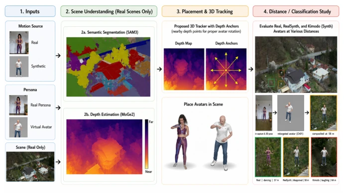

This paper attempts to enable drones to "read minds" from a hundred meters away, with motivation that is indeed grand and necessary. They constructed the Drones2BodyLanguage dataset, compositing virtual humans into real 4K aerial videos. The core of the method is a geometric world model, utilizing affine anchor combinations to solve the tracking challenge on textureless ground; without explicitly tracking the person themselves, but rather tracking ground feature points, this design is quite clever. However, training data relies heavily on synthetic motion (Kimodo), and there is still a gap in realism, and it assumes local ground rigidity, which may fail in complex terrain. Overall, the data contribution outweighs model innovation, providing a valuable benchmark for long-range intent recognition, but generalization still needs verification.
Long-range human motion perception is a critical requirement for social intelligent drones, such as in rescue scenarios [11] or privacy protection [20]. Existing work [4] shows that 2D pose detection collapses at distances beyond 50-100 meters. Collecting long-distance labels is prohibitively expensive, while pure synthetic rendering loses the photometric statistical characteristics of real aerial footage. Existing object placement methods [14, 31] mostly target single images or fully synthetic scenes and cannot handle metric consistency and rotational consistency in unmodified aerial videos. Therefore, virtual humans need to be placed controllably while retaining the real background to address data scarcity.
The overall process is divided into four steps: scene preparation, 3D anchor ground tracking, Avatar rendering compositing, and detection verification. The core innovation is the "Frame-invariant affine anchor combination" (Property 1). It utilizes SAM3 to segment placement areas and anchor areas, lifting corners to 3D via monocular depth. The key point is that placement points are predicted as affine combinations of anchors, where weights remain invariant under rigid body transformation, thereby eliminating the need to re-optimize weights per frame, solving the tracking challenge on textureless ground. Ground rotation is obtained via SVD fitting of the anchor constellation, ensuring Avatar orientation is consistent with the scene rather than the camera frame. This algorithm requires no training, is computationally efficient, and is robust to depth noise. Furthermore, Tikhonov regularization prevents system ill-conditioning, and the anchor pool mechanism handles loss cases, guaranteeing stability for long sequences.
Constructed 3,580 placement sequences, covering 10 intents, at distances of 33-98 meters. Tested on 12 architectures, training on placement data significantly improved intent recognition accuracy (from 0.48 to 0.74). Mixing real and redirected synthetic data (realsynth) yielded the best results. Ablation studies indicate that geometric rotation has minimal impact on learnability, but motion source distribution differences are significant. Transferability was validated on two unseen real scenes (Countryside, Resort), where mixed source training performed best. Detection rate is nearly perfect within 70 meters, with a slight drop at long distances. Experiments confirm the effectiveness of synthetic data in real scenes, but also reveal the critical impact of motion source distribution on model generalization.
其他图片Other Figures

Fig. 1: Overview: real and synthetic motions and personas are composited into real 4K drone scenes via SAM3 segmentation, metric depth and our 3D placement tracker; the real/realsynth/kimodo placements drive the intent study at distance